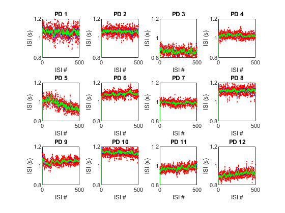
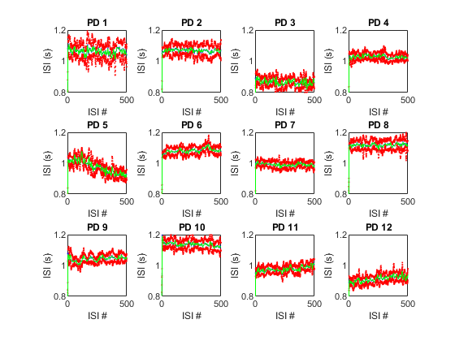

close all
load('E:\Winter 2019 Semester\Matlab2200\Assignment6\Supplementary Data S1.mat');
data = Data.StrideTimeIntervals_15minTrial.PD;
window=5;
fOne = figure('Name','Noisy','NumberTitle','off');
movegui(fOne,'center');
movegui(fOne,'north');
fTwo = figure('Name','Clean','NumberTitle','off');
movegui(fTwo,'center');
movegui(fTwo,'south');
pause(.2);
for counter = 01:12
dataA = data(:,counter);
figure(1)
subplot (3,4,counter),plot((dataA),'color', 'b')
title (sprintf("PD %d",counter))
xlabel ('ISI #')
ylabel ('ISI (s)')
axis ([0,500,0.8,1.2])
hold on
Me = zeros(length(dataA), 1);
StandardD1 = zeros(length(dataA), 1);
StandardD2 = zeros(length(dataA), 1);
Plus2 = zeros(length(dataA), 1);
Minus2 = zeros(length(dataA), 1);
for i = 2:length(dataA) - 1
Me(i) = mean(dataA(i - 1:i + 1));
StandardD1(i) = std(dataA(i - 1:i + 1));
StandardD2(i) = StandardD1(i)+StandardD1(i);
Plus2(i)=Me(i)+StandardD2(i);
Minus2(i)=Me(i)-StandardD2(i);
end
subplot(3,4,counter),plot(Plus2, 'o','MarkerSize',1, 'MarkerEdgeColor','red','MarkerFaceColor','red');
subplot(3,4,counter),plot(Minus2, 'o','MarkerSize',1, 'MarkerEdgeColor','red','MarkerFaceColor','red');
subplot(3,4,counter),plot((Me),'color','g');
end
saveas(gcf, 'FosterRobert_PartTwo_Nois', 'jpg');
for counter2 = 01:12
dataB = data(:,counter2);
figure(2)
meanSpeed = movmean(dataB,window);
subplot (3,4,counter2),plot((meanSpeed),'color', 'b')
title (sprintf("PD %d",counter2))
xlabel ('ISI #')
ylabel ('ISI (s)')
axis ([0,500,0.8,1.2])
hold on
cleanedMe = zeros(length(dataB), 1);
cleanedStandardD = zeros(length(dataB), 1);
cleaned2StandardD = zeros(length(dataB), 1);
cleanedPlus2 = zeros(length(dataB), 1);
cleanedMinus2 = zeros(length(dataB), 1);
for i = 2:length(dataB) - 1
cleanedMe(i) = mean(dataB(i - 1:i + 1));
cleanedStandardD(i) = std(dataB(i - 1:i + 1));
cleaned2StandardD(i) = cleanedStandardD(i)+cleanedStandardD(i);
cleanedPlus2(i)=cleanedMe(i)+cleaned2StandardD(i);
cleanedMinus2(i)=cleanedMe(i)-cleaned2StandardD(i);
end
cleanedMeMove = movmean(cleanedMe,window);
cleaned1StandardDMove = movmean(cleanedStandardD,window);
cleaned2StandardDMove = movmean( cleaned2StandardD,window);
cleanedPlus2Move = movmean(cleanedPlus2,window);
cleanedMinus2Move = movmean(cleanedMinus2,window);
subplot(3,4,counter2),plot(cleanedPlus2Move, 'o','MarkerSize',1, 'color','red');
subplot(3,4,counter2),plot(cleanedMinus2Move, 'o','MarkerSize',1, 'color','red');
subplot(3,4,counter2),plot((cleanedMeMove),'color','g');
end
saveas(gcf, 'FosterRobert_PartTwo_Cleaned', 'jpg');
 